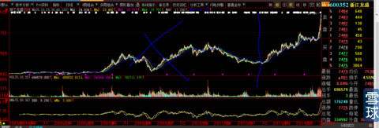
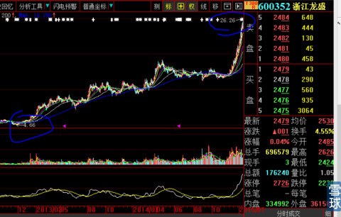
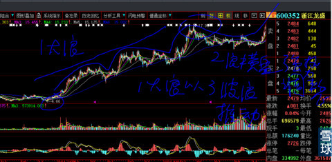
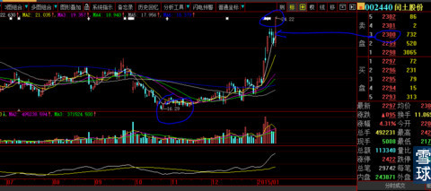
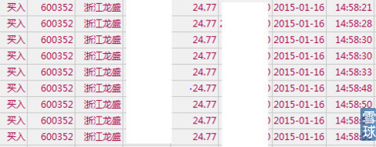
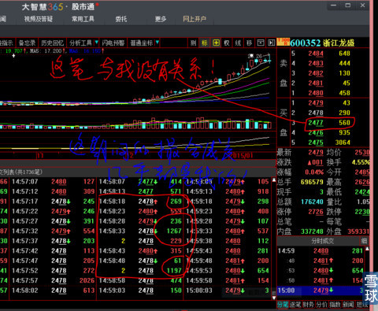

记住：股市有风险、入市须谨慎。
富贵总是险中求，古今中外慨莫能外。
真正的勇士总是在实战中不断挑战自己、超越自己，而不是赵括只会纸上谈兵。
媒体人和股评家在媒体上说看涨、看跌实在太容易了。
说对了赢眼球、赚稿费，说错了也仅仅是暂时从公众的视线中淡出而已。
但说看涨就重仓买进股票或股指期货，说看跌就去融券卖出或重仓沽空期指，就没有几人能做、敢做了。
做到的一定是真正的投资人或投机家，没有做到的基本可以归类进股评家。股评家是靠卖经常相反的预测来赚钱的，他们只给其他人提供“高质量，看起来非常复杂非常专业"的分析意见与预测，他们从不把自己漏夜挑灯＂呕心沥血＂研究出的分析意见与预测用于认真指导自己的投资、投机，或仅仅用自己的小部分钱参与＂言行一致＂的赌博式投机，根本谈不上是投资。
索罗斯对自以为眼光准确的部下常说的一句话是”那你建了多大的仓位？“，在投资、投机领域，看对了趋势与赚到了相对应的钱完全是两码子事。
我们看到的是浙江龙盛自从上市以来的全景图，见下图。为了保守计算，我们把2012年11月28日前的图形去掉。

为了保守计算，我们把2012年11月28日前的图形去掉，得到下图。

我们把2012年11月28日4.66元起步止于2014年4月21日的涨势，理解成第一大浪的话，第一大浪耗时长达17个月，第一大浪总是漫长而折磨人。那么从此时开始到2014年9月1日第2调整大浪的最低点就是13.73元，耗时4个半月，占第一大浪耗时的26%，如果第二大浪结束日确认为2014年10月27日的话，二浪耗时6个月，占第一大浪耗时17个月的35%，这个比较接近黄金分割位置。如果从11月17日计算的话是7个月（我们没有精确到交易日计算），那么第二大浪的调整时间是第一大浪的40%。完全符合第二浪无论是幅度还是耗时都比第一浪要小的波浪理论基本原则。
从此时起步，开始了最让人憧憬、升幅最大的三浪三之旅。当然每一个大浪其中必然套着无数小级别的细浪，这种麻烦事还是交给职业级波浪专家去厘清。我无论是工作、生活还是投资信奉的原则是：我们要的是模糊的正确，不要精确的错误！
从下图，我们可以很清晰的看到，最高价17.98元，最低价4.66元，价差是17.98-4.66=13.32元，2个量度升幅=13.32*2=26.64，那么目标价=26.64+17.98=第一必须达到的目标价44.62元，极端行情的3个量度升幅=13.32*3=39.96元+17.98=57.94元。

那么我们再来看看002440闰土股份的量度升幅如何计算。我们同样采取保守、谨慎的原则不用去取数年的大图型，就从本次的最低价来算总可以吧：本次的最高价上影线24.22早就在我的计划之中，还记得那篇专贴中我给出的最大可能走法吗？

我们取折衷价就是昨天的收盘价22.97元好了，最低价没有疑义16.29元，22.97-16.29=6.68元，第一必须达到的目标位=22.97+（22.97-16.29）*2=36.33元，我个人认为3个量度升幅是更接近未来的真实，理由不在此详述：第二目标位=22.97+（22.97-16.29）*3=43.01元。与浙江龙盛短期目标位基本接近，相互印证。
从以上对闰土股份量度升幅的计算，可以了解我是多么保守、谨慎而务实的一个投资决策人。那么三浪三到底会运行多长时间呢？呵呵，这两只股的第一大浪运行时间都是17个月，第三大浪运行时间一定不会长于第一大浪，经验值告诉我们，一般只有第一大浪的倒黄金分割时间，也就是全程5个月左右全部搞定。它们未来主要的时间会耗费在第4大浪和第5浪中去。三浪三一定是耗时最少升幅最大的阶段。
有一点我现在可以以多年的实战经验肯定：上述给出的最小量度升幅目标位一定会达到。
那么会有人说：公开说出来的东西会有效吗？毕竟还是有粉丝看到的呀。
拜托大哥，说一点有知识含量的话好不好？你认为大盘是李大霄的“钻石底”、但斌的“玫瑰底”喊出来的吗？2013年从年初到年底军工股全部趴在历史大底的时候，那时候侯宁天天说未来涨幅最好板块之一是军工股，难道2014年军工股行情是侯宁喊出来的嘛？如果是这样，李大霄、但斌、侯宁不是早就世界级大富豪？全世界的资金早就全部交给他们打理了。
股市所有的炒作噱头、故事的最核心点就是一个：业绩、或者业绩改善的各种预期（政策导向、资产重组、并购增发）。浙江龙盛、闰土股份现在凭的就是扎扎实实的业绩+行业进入的高门槛+严重被市场低估的低廉价格，全市场去找找看，有几只这样的？数量如此之少（深沪各1只共计2只股票）、价格如此便宜（请对应我关注、进入的时间、地点、价格）、市场资金如此庞大，还不快速把股价打上天？
熊市才会出现超级大牛股，这是经验之谈。在股价普涨后的今天，最近时间段就相当于牛市时期的局部熊市期间。如同林彪打仗：集中优势兵力只攻击一路敌人，在局部上形成兵力的压倒性绝对优势，结局自然明了。
心得体会记录了这么多，我会是只会纸上谈兵的赵括吗？
由于我对闰土股份的走势很早时期就有了一个大概的胸中蓝图并提前有记录，下图是我昨天上午在闰土股份最高封涨停价位不能封停回落时，快速T出闰土股份40%仓位，用牢不可破的耐心等到收盘前2分钟全部买回浙江龙盛的成交单，当然心里有个小九九在计算它俩各自的小价差，为下周一能够多赚6%也算耍了一次小聪明而已。要知道我的6%够买多好的一台S级别大奔呀。

就凭这长长的大额成交单和浙江龙盛昨日收盘那么难看的高位见顶上影阴线，就知道我的内心是多么的强大，知行合一是多么难得的一致，对技术的理解绝非照本宣科。股价走到这个时候，技术已经排斥到第二位了，下图中搓合成交几乎全部是打砸到我的接单上，我看在眼里喜在心头，这接的哪里是筹码啊，简直就是超度别人惊恐不安的心，在做善事啊！
晒单有意思吗？是的，没意思，太没意思，而且显得为人狂悖、浮躁浅薄。那为什么还要做呢？因为身份不同。我自诩是实战型心法、技术分析、基本面研究的分享者而非获取者，必须让对象有阳光的照射。

在技术上完全背离的情况下这样买入，我知道偏离了技术指导原则，但是，我也知道这个时刻踏空的风险远远大于被套4%的风险，为什么只有-4%这么一点风险？今后有机会再分享我在“600352浙江龙盛”看盘中发现的秘密，那时候大家会发现人与人之间的差异是多么巨大。与未来巨大的上涨相比，这点回调算什么呢？再说了，有没有回调只有天知道。
所有股市、期货技术分析是建立在市场、业绩、不同对象上的，技术不可能孤立存在。
但是，技术可以提前窥测到先机。
例如：从复权后的大型态来看（只有SB才会问：是前复权还是后复权），浙江龙盛+闰土股份的第二调整浪，基本上是以对比第一大浪下跌幅度在1/4范围内长时间波动的。也就是用时间换取空间，不是用下跌幅度换取未来上涨的空间，已经从技术上用长达7个月时间明白无误的大声告知市场：我强壮，我将继续强壮，未来会更加强壮直到市场为之疯狂。 强者恒强！
李小遥@炒的是心:心大，我测算过了70多个股票，3个量度升幅好像只适用于这波证券股这样的超级大牛股，一般股票只有2个量度升幅。请问闰土3个升幅有什么特别看好的理由吗？
回复@李小遥:
1、所以，我只做大牛股呀？终于看出门道了。其实，你用一个一个小波段去测试，效果一样的。只是教起来太麻烦，我也没有那个耐心。
2、至于为什么闰土股份要用3个量度升幅计算：因为我取的是它最近的价差，而不是像浙江龙盛那样，取的2年大图形，这样会更保守、稳健一些，使自己立于不败之地。
3、做股票，就找这种清晰图形的大牛股，就像找情人一定是1万人里面一眼望过去最扎眼的哪一个呀？我就是这样选股票的。嘿嘿，不要猜生活中。
4、交给大家这个量度升幅的计算方法，第一最重要的原因是：起码可以看到走出来的股票是不是已经完成了量度升幅，不要再飞蛾扑火。这个时候毕竟所有的事实已经摆在我们的面前。能够回避最高位、最大、最主要阶段、最有杀伤力跌幅阶段是每一个身在市场第一保命秘籍和颠扑不破的真理。
感冒的番茄@炒的是心
看了您以前的文章，这票应该是各路资金都有，您说过是很多资金看好的票，所以没有所谓的庄，大伙一起众人拾柴火焰高不知道可以这么理解吗？
吵的是心@感冒的番茄
对的，就是前期券商板块炒作的翻版。从业绩、行业门槛、股本分析、特别是同类行业只有2只个股票的数量来看，它俩会比券商股的炒作：没有最凶只有更凶。因为不够市场资金分啊！再说了，图形越大后面的图形会更大。
wiewu@炒的是心:
心大，我还是忍不住想问你当初是怎么精确判断出10月30是002189的大顶的？太神了。
炒的是心回复wiewu:
2014年10月30日我是雪球以及全市场第一个喊：002189利达光电今天就是它未来很长很长时间的大顶“的人，其实说穿了很平常啦。把戏把戏，说穿了就一钱不值。是因为：
1、9月17日收盘价15.18元，最靠近的大底部最低价是5.79元,2014年10月30日的前一天，股价已经触碰到35元，2倍量度升幅正好完成是其中的一个原因。
2、最后的上涨是用了3波，俗话说：一而再、再而三、三而竭。
3、我不是说过，我有专门对付大牛股的工具嘛？其中有短线敏感指标从来没有教过别人。
炒的是心回复kongfupanada: 你这样测算会害死你们自己的。//@kongfupanada:回复@炒的是心:嗯。好的。我感觉聚光科技和国电清新也有点这样的走势。聚光我测算一下会到41，国电会到63，不知是否正确，请赐教！
不带走一片云彩@炒的是心:中信证券就像西门庆，他自己把感情（筹码）都换成现金了，李瓶儿们还在拿现金去换感情（筹码），幻想西门庆还会像上次（2007年）一样涨几十倍，我也差点就成了李瓶儿， 感谢心大。
炒的是心@不带走一片云彩:
1、股票价格上升趋势确立后，大概上涨的可能目标，心中可以提前有个大概预期准备，否则到时候受媒体蛊惑犯“屁股决定脑袋”错误；
2、看到心仪股时，既然人家最大的极端升幅都已经达到，就不要再去凑热闹了。
3、前2周我写过一篇专贴，题目叫《人多的地方不要再去》，是劝粉丝退出券商股或者千万不要再追（挂了一周时间约莫粉丝都看到后才删除），结果晚上写出第二天早晨就报道昨晚上海外滩发生人与人踩踏事件。
4、写本帖《量度升幅》的目的，只有今天凌晨一个粉丝体会道了，跟帖写到：“心大，你举的这个例子真他妈太绝了，必须怒赞。我知道你的苦心”。呵呵，不就是说券商股极端量度升幅都完成了，就像东方明珠之后的结果？结果就是今天券商出大利空，这也真是太巧了吧？上次踩踏，这次利空，都提前踩在点子上。
5、1月10日写出《这里是浙江龙盛的头部吗》专贴，第二天11日，湖北石首楚源化工集团大火，染料原料紧缺雪上加霜，好多粉丝跟帖都怀疑“那把火是不是心大放的”。上周五1月16日在技术面极端利空的尾盘时刻，我大力加仓600352浙江龙盛，今天浙江龙盛就出“年产2万吨对苯二胺项目环境保护设施竣工验收公示”信息。这一切巧的我自己都怀疑是不是幂幂中有神的指引。
6、我写过一篇帖子《人还是要相信运气的》，真是不信都不行。所以说，生活中要多跟有运气的人同行。我想这也是上天对我这样充满善意人格的最大奖赏。